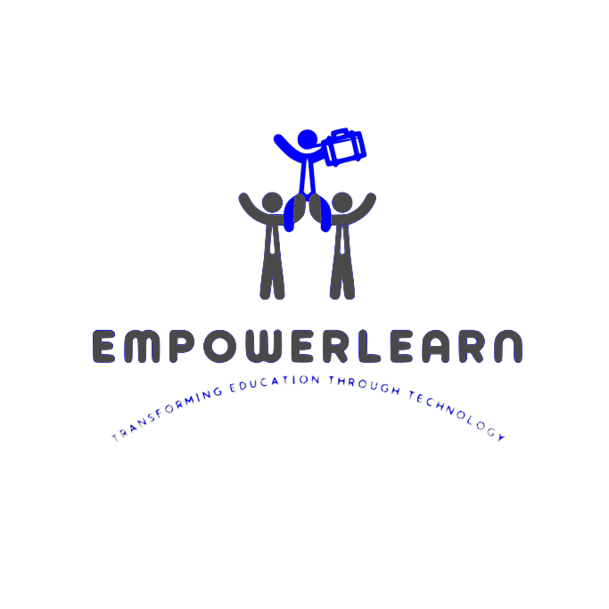

Exploring creativity through visual design.
Designing the book cover “Empower the Future Workforce” was an engaging creative experience that allowed me to apply visual design principles with a clear instructional purpose. My goal was to create a cover that communicated forward-thinking, career development, and the evolving skill demands of the future workforce. Throughout the design process, I drew on ideas from color theory, layout balance, and visual hierarchy to produce a cover that feels both modern and meaningful. One of the most important parts of the experience was selecting imagery that symbolized growth and skill development in a way that was both intuitive and motivational. I incorporated upward-pointing arrows and icons representing learning, innovation, and collaboration to reinforce themes of progress and career readiness. The wooden blocks spelling “CAREER” became the focal point of the design, and arranging them along a rising path visually emphasized advancement and momentum. This helped anchor the message of the book while keeping the cover dynamic and easy to interpret at a glance. I used a clean, bold font for the main title to make it stand out, while pairing it with a softer subtitle to maintain readability and flow. Choosing a cool, teal-based color palette helped create a sense of professionalism and future orientation, which aligned well with the book’s topic. Balancing these elements taught me a great deal about how visual style influences the perceived tone of educational materials. Creating this book cover strengthened my skills in layout design, visual storytelling, and layering multiple graphic elements cohesively. It also reminded me how powerful design can be in communicating ideas before a reader even opens the page. This project was more than a visual task—it was an opportunity to express a complex theme through intentional, thoughtful design.
Designing the EmpowerLearn logo was an engaging creative experience that allowed me to merge visual design principles with the broader mission of educational technology. My goal was to create a logo that captured the spirit of collaboration, empowerment, and innovation, values that lie at the heart of effective learning environments. Throughout the design process, I explored how symbolism, color, and typography could work together to communicate these ideas in a clear and memorable way. One of the first design decisions I made was to emphasize connection and collaboration, which I represented through the use of overlapping shapes and unified lines. This visual style reflects the way learners, instructors, and technology intersect within modern educational spaces. The soft curves convey inclusivity, while the upward flow suggests growth and progress. These elements helped create a sense of motion and aspiration, which aligns with EmpowerLearn’s purpose of supporting learners as they build skills and move forward in their educational journeys. Color choices were also intentional. I selected a palette that balances creativity with professionalism, which is vibrant enough to inspire curiosity but grounded enough to communicate trust. These colors help position EmpowerLearn as a platform that is both learner-friendly and reliable. Similarly, the typography was chosen to reflect modernity and clarity. The clean, rounded typeface suggests approachability, while maintaining a structured look that aligns with educational credibility. Creating the EmpowerLearn logo strengthened my understanding of how design communicates identity. It taught me how small decisions, like the angle of a line or the spacing between shapes, can subtly influence how audiences perceive a brand’s message. More importantly, the process helped me translate core educational values into visual form, building a logo that feels cohesive, meaningful, and aligned with the principles of empowerment and learning.
